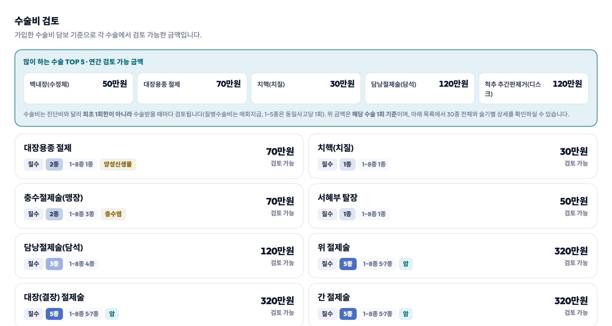
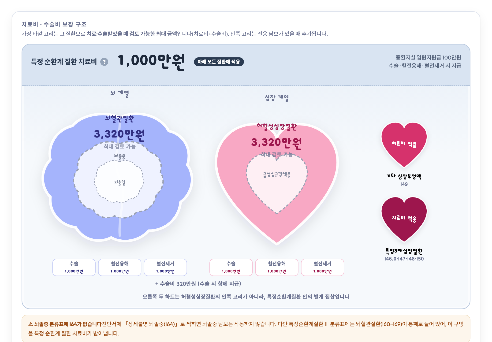
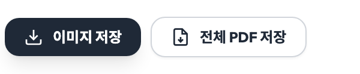

복잡한 가입제안서,
핵심만 빠르게
내가 설계한 가입제안서 설명하기 힘드셨죠?
PDF 하나면 암 · 수술비 · 뇌·심장 담보가 자동으로 정리됩니다.
이 서비스는 설계 매니저를 위한
Edge한 도구입니다
고객에게 제안서를 설명하기 전, 어느 담보에 얼마가 걸려있는지 빠르게 파악할 수 있습니다.
직접 계산하거나 PDF를 처음부터 읽을 필요 없이—업로드 하나로 핵심 수치가 정리됩니다.
즉시 분석
PDF 업로드 후 수초 내 담보 자동 추출. 5년 최대 보장금액까지 한 화면에.
4사 지원
메리츠 · 삼성화재 · DB손해보험 · 흥국화재. 각사 제안서 포맷을 자동으로 인식합니다.
저장 & 공유
화면은 PNG 한 장으로, 전체는 A4 PDF로. 카카오톡으로 고객에게 바로 공유하세요.
스마트 가입제안서 OPEN
암 치료비만 보던 화면에 수술비와 뇌·심장이 더해졌습니다.
같은 제안서 한 장으로 세 가지 보장을 각각 정리해 보여드립니다.
암 보장
기존 그대로입니다. 9개 카드와 5년간 받을 수 있는 암 치료비를 보여줍니다.
수술비
많이 하는 수술 30종이 각각 얼마까지 검토 가능한지 금액으로 나옵니다.
뇌·심장
뇌와 심장을 동심원으로 그려, 어느 질환이 얼마를 덮는지 한눈에 보여줍니다.
"이 수술 받으면 얼마 나와요?"
상담에서 가장 많이 듣는 질문입니다. 담보를 하나씩 짚어가며 계산하지 않아도, 수술 이름 옆에 검토 가능한 금액이 바로 붙습니다.

맨 위에 많이 하는 수술 5종을 먼저 띄우고, 아래에 30종 전체를 나열합니다.
다빈도 수술 TOP 5를 먼저 — 백내장 · 대장용종 · 치핵 · 담낭절제 · 디스크. 고객이 가장 많이 묻는 다섯 가지를 상단에 고정했습니다.
어느 담보에서 나오는지까지 — 질병수술비 · 1~5종 · 1~8종 · N대질병이 각각 몇 종으로 걸리는지 뱃지로 표시합니다. 금액의 근거를 그 자리에서 설명할 수 있습니다.
술기가 갈리면 범위로 — 개복이냐 복강경이냐에 따라 금액이 달라지는 수술은 범위로 보여주고, 누르면 술기별 상세가 펼쳐집니다.
면책도 반영 — 치핵 · 제왕절개처럼 약관 제6조②에 걸리는 수술은 해당 담보를 빼고 계산합니다. 실제보다 크게 보이지 않도록 했습니다.
뇌와 심장은,
넓을수록 좋은 보장입니다
뇌출혈 ⊂ 뇌졸중 ⊂ 뇌혈관질환. 급성심근경색 ⊂ 허혈성심장질환. 말로 설명하면 어려운 포함 관계를 동심원으로 그려, 바깥 고리가 넓을수록 좋다는 걸 눈으로 보여줍니다.

뇌는 뇌 모양으로, 심장은 하트 모양으로. 각 고리 안에 검토 가능한 최대 금액이 들어갑니다.
가장 바깥 고리 = 최대 금액 — 그 질환으로 치료·수술받았을 때 검토 가능한 금액(치료비 + 수술비)입니다. 안쪽 고리는 전용 담보가 있을 때만 더해집니다.
특정 순환계 질환 치료비를 강조 — 41개 질병코드를 통째로 덮는 가장 넓은 담보입니다. 옆의 ?를 누르면 어떤 코드가 포함되는지 전부 확인할 수 있습니다.
수술 · 혈전용해 · 혈전제거 — 치료 행위별로 얼마가 나오는지 카드로 표시하고, 수술비 계열(질병수술비 · 1~5종 · N대질병)을 합산해 함께 보여줍니다.
놓치기 쉬운 구멍도 알려드립니다 — 예를 들어 뇌졸중 분류표에는 I64(상세불명 뇌졸중)가 없습니다. 이런 함정은 화면에 경고로 띄웁니다.
세 화면을 한 번에, PDF로
「이미지 저장」 옆에 전체 PDF 저장이 생겼습니다. 암 보장 · 수술비 · 뇌·심장을 각각 한 장씩 담아 A4 세로 PDF로 내려받습니다.

담보가 없어 표시되지 않는 탭은 자동으로 빠집니다. 수술비 담보가 없는 제안서라면 암 보장과 뇌·심장, 두 장으로 나옵니다.
3단계면 끝
복잡한 설정 없이, 파일 하나만 있으면 됩니다
제안서 PDF 업로드
가입제안서 PDF 파일을 업로드 존에 드래그하거나 클릭해서 선택하세요.
메리츠화재 · 삼성화재 · DB손해보험 · 흥국화재 제안서를 자동 인식합니다.

담보 자동 분석
업로드된 PDF에서 암 관련 담보만 자동으로 추출합니다.
항암방사선 · 항암약물 · 암수술비 등 9개 카드로 분류하고, 5년간 받을 수 있는 최대 보장금액을 한눈에 확인하세요.


결과 저장 & 공유
분석이 완료되면 이미지 저장 버튼으로 결과를 PNG 파일로 저장할 수 있습니다.
고객 상담 시 바로 활용하거나 카카오톡으로 전달하세요.

현재 지원하는 보험사
각사 PDF 포맷을 자동 인식합니다
레벨링 서비스 연동 · 매니저 코드 자동 인식
담보가입현황 기반 정밀 추출 · 수술비/뇌·심장 지원
프로미라이프 시리즈 지원 · 일부 담보 누락 가능
흥Good 시리즈 지원 · 일부 담보 누락 가능
분석 그 이상
이미지 저장
보고 있는 화면을 이미지 한 장으로 저장합니다. 고객 미팅 전 빠르게 준비하거나 상담 후 증빙 자료로 활용하세요.

오류 제보
분석 결과가 실제 제안서와 다를 경우 오류 제보 버튼으로 알려주세요. 빠르게 확인 후 다음 업데이트에 반영합니다.
협업 문의 및 광고 문의
지금 바로 분석해보세요
PDF 하나면 충분합니다
가입제안서 업로드하기 →
* 이 서비스는 가입제안서를 기반으로 담보를 한눈에 보기 쉽게 재구성한 참고용 도구입니다.
실제 보상금액과 조건은 가입제안서 및 약관을 반드시 확인하세요.